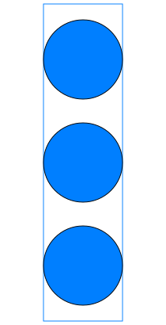

| Name |
Description |
 FluidPort FluidPort |
Interface for quasi one-dimensional fluid flow in a piping
network (incompressible or compressible, one or more phases, one or
more substances) |
 FluidPort_a FluidPort_a |
Generic fluid connector at design inlet |
 FluidPort_b FluidPort_b |
Generic fluid connector at design outlet |
|  FluidPorts_a |
Fluid connector with filled, large icon to be used for vectors
of FluidPorts (vector dimensions must be added after dragging) |
 FluidPorts_b FluidPorts_b |
Fluid connector with outlined, large icon to be used for
vectors of FluidPorts (vector dimensions must be added after
dragging) |
 PartialTwoPort PartialTwoPort |
Partial component with two ports |
| PartialTwoPortTransport |
Partial element transporting fluid between two ports without
storage of mass or energy |
 HeatPorts_a HeatPorts_a |
HeatPort connector with filled, large icon to be used for
vectors of HeatPorts (vector dimensions must be added after
dragging) |
 HeatPorts_b HeatPorts_b |
HeatPort connector with filled, large icon to be used for
vectors of HeatPorts (vector dimensions must be added after
dragging) |
 PartialHeatTransfer PartialHeatTransfer |
Common interface for heat transfer models |
| PartialLumpedVolume |
Lumped volume with mass and energy balance |
| PartialLumpedFlow |
Base class for a lumped momentum balance |
| PartialDistributedVolume |
Base class for distributed volume models |
| PartialDistributedFlow |
Base class for a distributed momentum balance |
| PartialPressureLoss |
Base flow model for pressure loss functions with the same area
at port_a and at port_b |